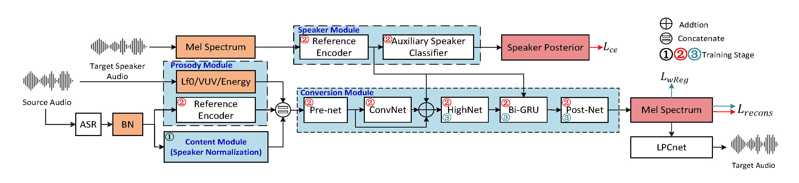

One-shot style transfer is a challenging task, since training on one utterance makes model extremely easy to over-fit to training data and causes low speaker similarity and lack of expressiveness. In this paper, we build on the recognition-synthesis framework and propose a one-shot voice conversion approach for style transfer based on speaker adaptation. First, a speaker normalization module is adopted to remove speaker-related information in bottleneck features extracted by ASR. Second, we adopt weight regularization in the adaptation process to prevent over-fitting caused by using only one utterance from target speaker as training data. Finally, to comprehensively decouple the speech factors, i.e., content, speaker, style, and transfer source style to the target, a prosody module is used to extract prosody representation. Experiments show that our approach is superior to the state-of-the-art one-shot VC systems in terms of style and speaker similarity; additionally, our approach also maintains good speech quality.

2. System Description
Comparison Systems
AGAINVC: ground-truth seen speakers
VQMIVC: generated seen speakers
GSE: ground-truth unseen speakers
GSE-finetune: generated unseen speakers
Ablation Systems
BL: baseline system. BL is composed of speaker and conversion module to convert BN to mel spectrum
P1: P1 uses speaker normalization based on BL
P2: P2 adopts weight regularization based P1
P3: the final system we proposed. P3 uses prosody module based on P2